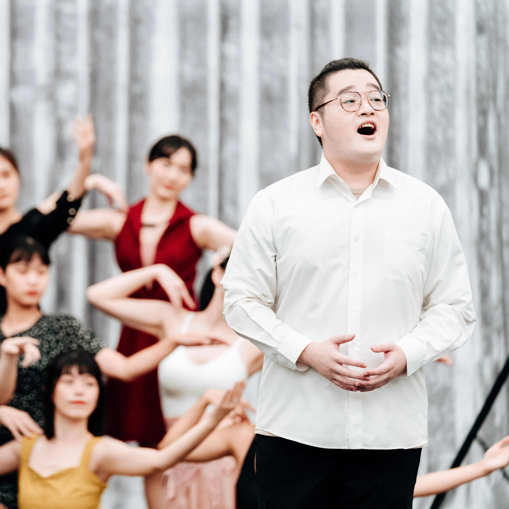
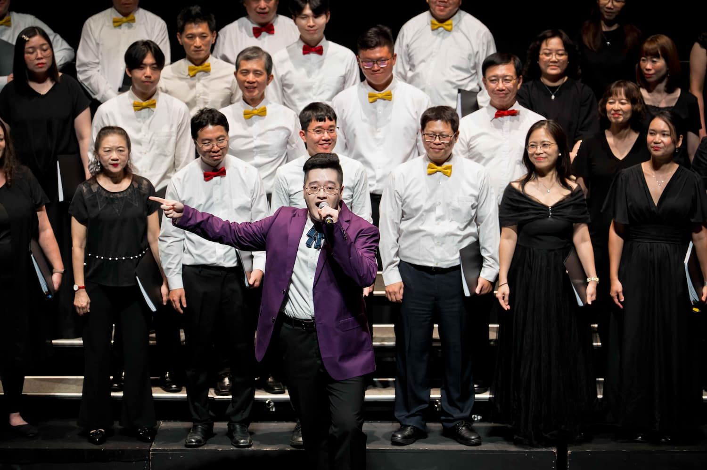
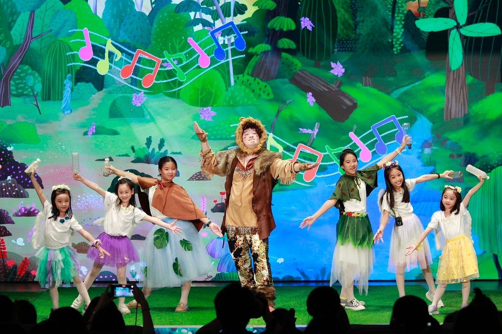
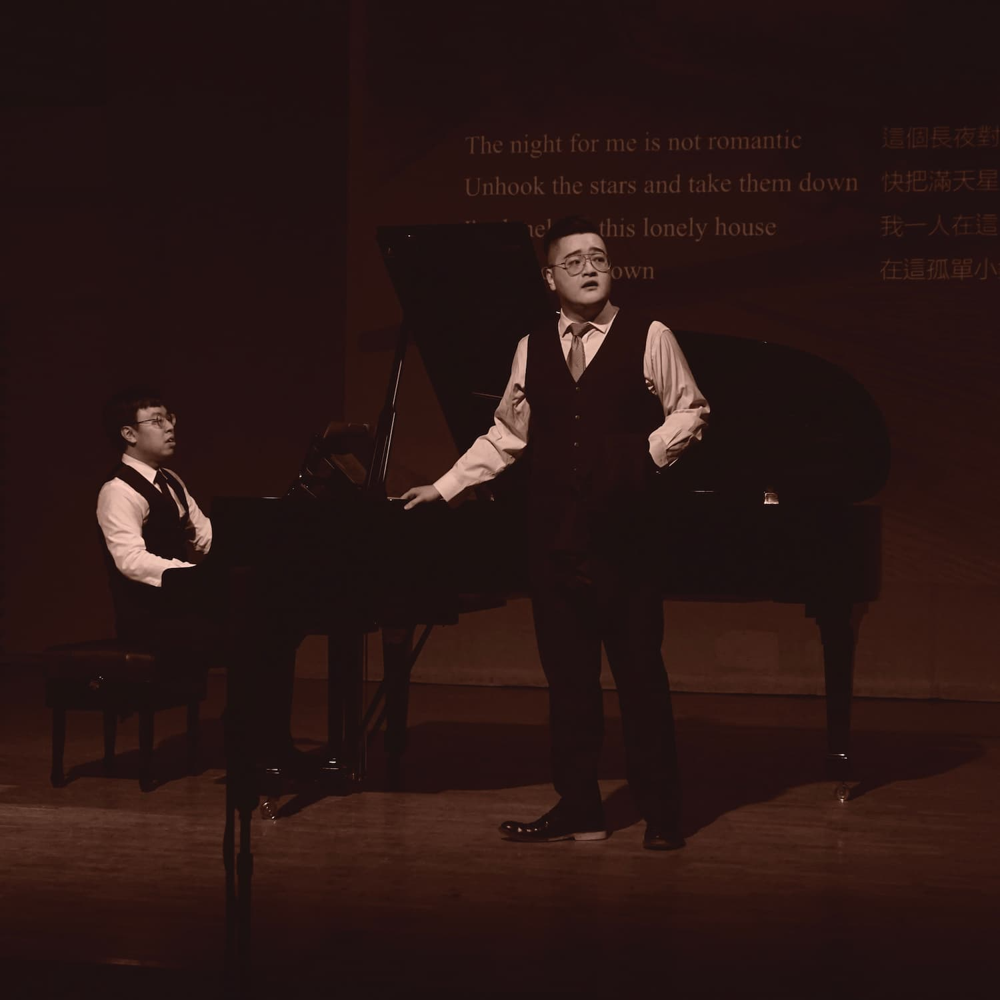

05 / Videos


歌手｜演員
完整經歷與過往演出 Full CV男高音林鼎強，擁有東海大學表演藝術碩士學位，主修表演、副修聲樂。歌唱起源自大學時的音樂劇通識課程，於2022與2024年兩度入選臺中國家歌劇院《NTT×勇源 - 音樂劇線上：新起之秀》，獲多位業內專家指導，並曾遠赴義大利 Brancaleoni 音樂節進修登台演出。
目前鼎強為活躍的劇場演員與歌手，合作、共演單位包括臺中國家歌劇院、桃園市國樂團、謎思星球劇團、臺南市管樂團、臺灣青年管樂團、台中爵序大樂團...等等。現為謎思星球劇團歌手、東海大學流行歌唱研習社指導老師。他的演出足跡穿梭於音樂劇、歌劇、爵士樂、親子劇場與阿卡貝拉之間。從正式的表藝場館至充滿歷史底蘊的古蹟，或是氣氛微醺的餐酒館，都能尋獲他的演出足跡。
在深耕舞台表演之餘，林鼎強亦專注於錄混音工程。他與爵士跨界鋼琴家 Ivan 曾偉建灌錄發行多首爵士經典曲目；2025年末，與 Ivan、林莉豐、林友諒、劉南廷攜手發行聖誕EP《Lights, Music, Carols!》。現持續致力於各種以聲音為核心的跨域合作。
東海大學表演藝術與創作碩士學位學程
東海大學音樂學系（聲樂副修）
東海大學歷史學系



